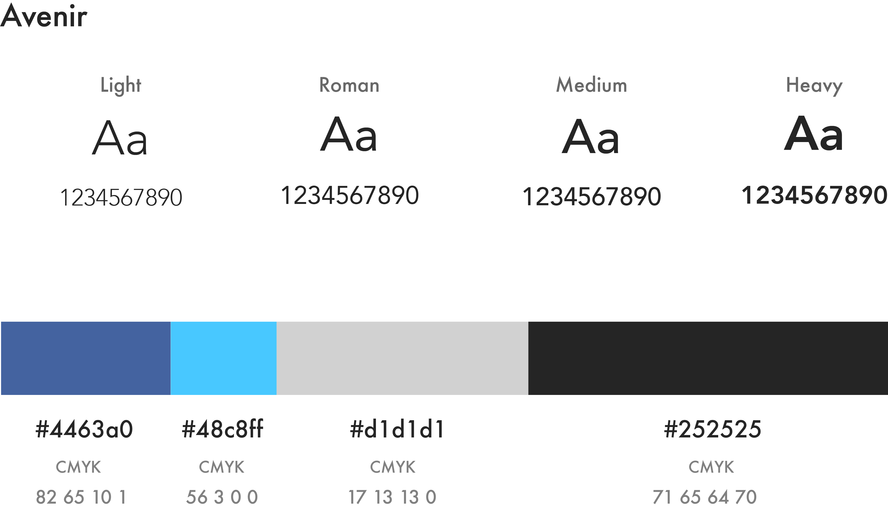
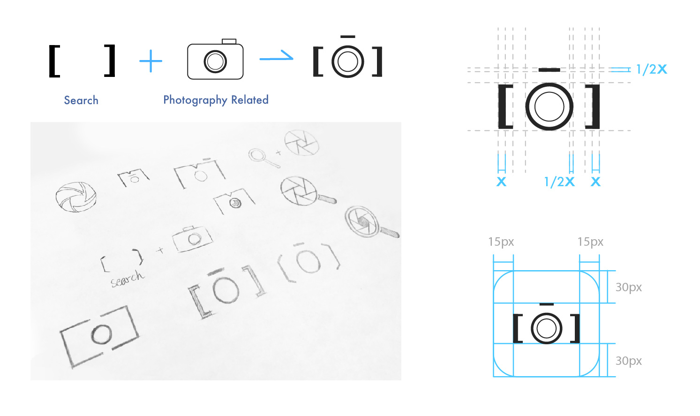
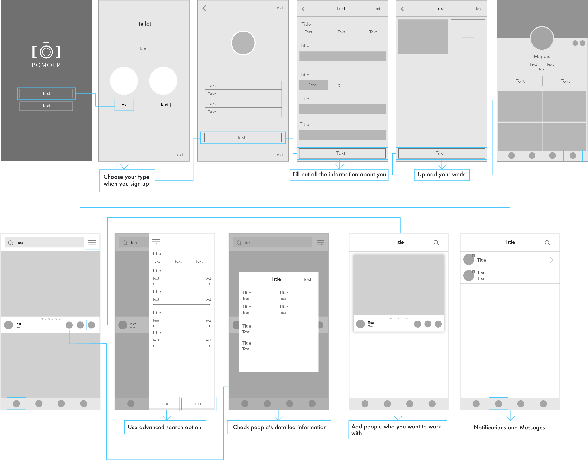
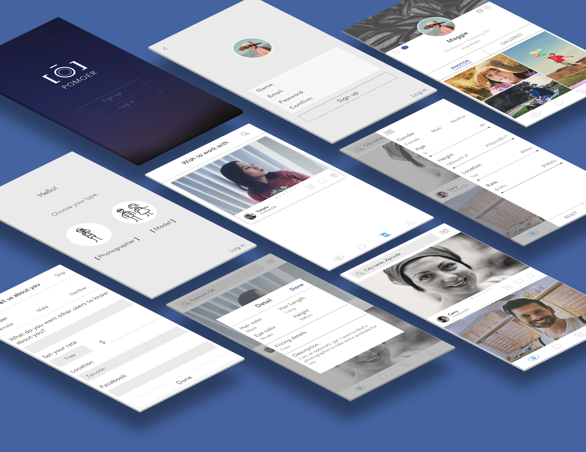

OVERVIEW
Pomoer is a mobile app which allows people to connect with photographers or models easily and at a lower rate.
Role:
Ideation, conceptualisation, UX design and visual design
Medium
Phone app
Date:
2017
INSPIRATION
This app is inspired by my Photography friends who have a difficult time finding desirable models at low rates. I have also seen people who seek affordable photo shoots; therefore, I want my app to help them connect with photographers who have experiences in portrait photography as well.PROBLEMS
There are many skillful semi-professional photographers who would like to share their passion, but they do not have the budget to hire professional models. They end up taking photos of their friends. However, they want to improve their skills by taking photos of new faces.SOLUTION
My solution is to create an app on the smartphone that will helps people to easily find the suitable models and photographers.Price Setting
Easily find the affordable models and photographers by setting the price.Info Window
Users can check modelsʼ detailed information easily by clicking on the information window button.Location Search
Search for available models and photographers by typing the name of the city, state, or zip-code in the location search.Advanced Search Option
Use advanced search option to specify model preferences by height, hair color, and more.Create profile
At the beginning of joining, user goes to sign up and sets up all the information.Find a Suitable Model
User explores new faces and adds her interests to the list.Style Guide
Brand
Flowchart

